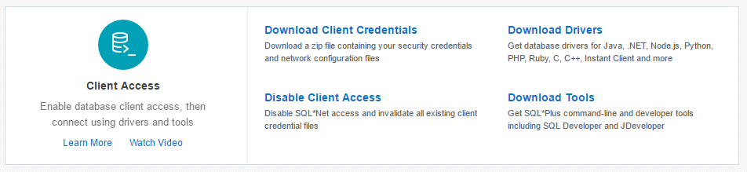

|
|
This was first published on https://blog.dbi-services.com/running-slob-on-exadata-express-cloud-service (2017-02-01)
Republishing for new followers. The content is related to the the versions available at the publication date
The Exadata Express Cloud Service is a managed PDBaaS: Oracle is the system admin and the CDB database administrator, you are the PDB administrator. You connect with a local user, PDB_ADMIN, which is no SYSDBA privilege but has a PDB_DBA which has nearly all DBA rights, but with some features disabled by lockdown profile. I have no worry about the performance on this service: it is an Exadata X5 half rack bare metal (my guess), the CDB running as RAC One Node on 2 compute nodes, accessing the 7 storage cells. Smart Scan is disabled and given the small size of the PDB, and the low usage of the CDB, I/O is fast (most single block latency bwtween 128 and 256us coming from cell flash cache). But I like to run SLOB on new platforms and I wanted to see if I can run it here, without SYSDBA role, and connecting to a CDB. You can find SLOB at https://kevinclosson.net/slob/
I’ll connect remotely because SLOB will be running on my computer (I have no access to the host for the PDBaaS managed service). In order to connect remotely, through a SQL*Net over SSL, you have to download the client credentials kit 
It is a zip file that contains the encryption wallet and the sqlnet.ora and tnsnames.ora to use. I unzip it in a directory (/var/tmp/client_credentials in this example) and I’ll use it by setting the TNS_ADMIN environment to this directory. Thus I change the wallet location in the sqlnet.ora: $ cat sqlnet.ora
WALLET_LOCATION = (SOURCE = (METHOD = file)
(METHOD_DATA = (DIRECTORY="$TNS_ADMIN")))
and I use the provided tnsnames.ora which defines the ‘dbaccess’ service:
$ cat tnsnames.ora
dbaccess = (description=
(address=(protocol=tcps)(port=1522)(host=dbaccess.us2.oraclecloudapps.com))
(connect_data=(service_name=eptdojjm1ag.usdc2.oraclecloud.com))
(security=(ssl_server_cert_dn="CN=dbaccess.us2.oraclecloudapps.com,O=Oracle Corporation,L=Redwood Shores,ST=California,C=US"))
)
The default slob.conf connects with a bequeath connection. Here I need to connect through the network service described above. I uncommented:
#ADMIN_SQLNET_SERVICE=slob #SQLNET_SERVICE_BASE=slob #SYSDBA_PASSWD=change_on_installand replaced it with:
ADMIN_SQLNET_SERVICE=dbaccess SQLNET_SERVICE_BASE=dbaccess SYSDBA_PASSWD=xxxxxxxxx
Where xxxxxxxxx is my PDB_ADMIN password that I setup in:

Of course we need an Oracle Client. Download instant client if you don’t have one.
SLOB creates the users and grant them RESOURCE,DBA In Exadata Express Cloud Service, I don’t have the DBA role but the CREATE SESSION, and the PDB_ROLE which is sufficient. In addition to that I need to give quota to the IOPS tablespace because PDB_ADMIN do not have unlimited tablespace. Finally here is the create user part after my modifications:
msg NOTIFY "Creating user: $user " sqlplus "$constring" <<EOF WHENEVER SQLERROR EXIT 2; SET TERMOUT ON SET ECHO ON PROMPT User grants for $user WHENEVER SQLERROR EXIT 2; GRANT CREATE SESSION TO $user IDENTIFIED BY $user; GRANT PDB_DBA TO $user; ALTER USER $user DEFAULT TABLESPACE $tablespace ; ALTER USER $user QUOTA UNLIMITED ON $tablespace ; EXIT; EOF
The setup.sh starts by dropping the SLOB schemas up to MAX_SLOB_SCHEMAS just in case they are there. The default is 4096 but that’s too much for me because of the latency to the server in US (it is planned to have Exadata Express Cloud Service in Europe in the future), so I reduced it to 8 (as I have only 1 CPU in this service, there’s no need for more users):
export MAX_SLOB_SCHEMAS=8
And last modification in setup.sh was to disable the Multitenant checking because PDBaaS is by definition on a Multitenant database:
if ( ! check_mto "$ADMIN_CONNECT_STRING")
then
msg FATAL ""
msg FATAL "This version of SLOB does not support Oracle Multitenant Option"
msg FATAL
#exit 1
fi
I’ve not seen any problem. Oracle designed multitenant so that everything you used to do on a database is possible to do on a PDB.
First, in order to connect as PDB_ADMIN instead of SYS as SYSDBA, you have to change the admin_connect_string:
export admin_connect_string="pdb_admin/${SYSDBA_PASSWD}@${ADMIN_SQLNET_SERVICE}"
Second, SLOB calls UTL_FILE which is not allowed in Exadata Express Cloud Service. Becase I’ve seen in the code that this is bypassed when the ‘nt’ argument is 1 so I’ve set it to this value in runit.sh:
arg9=1 #was: $nt
Finally, because we can’t create manual AWR snapshots in Exadata Express Cloud Service, I replaced the EXEC DBMS_WORKLOAD_REPOSITORY.CREATE_SNAPSHOT by the creation of a small view to get the basic statistics:
create or replace view FPAV as select 'STAT' class,name,value from V$SYSSTAT union all select 'WAIT' class,event,total_waits from V$SYSTEM_EVENT union all select 'TIME' class,stat_name,value from V$SYS_TIME_MODEL union all select 'V$OS' class,stat_name,value from V$OSSTAT union all select 'MICRO' class,event||' - '||wait_time_format,wait_count from V$EVENT_HISTOGRAM_MICRO ; create table FPAT as select sysdate time,FPAV.* from FPAV where 1=0; insert into FPAT select sysdate time,FPAV.* from FPAV; commit;
and I replaced the part that runs the AWR report with a simple query:
($admin_conn <<EOF set echo on heading on underline on linesize 120 trimspool on pagesize 1000; host cat slob.conf > awr.txt spool awr.txt append commit; column per_sec format 999G999G999G999G999 select to_char(btim,'hh24:mi:ss') btime,to_char(time,'hh24:mi:ss')etime,seconds,class,name,round(delta/seconds) per_second , decode(class||' '||name ,'STAT session logical reads','LIO/s' ,'STAT physical read total IO requests','PIO/s' ,'TIME DB CPU','CPU us' ,'TIME DB time','DB time us' ,'STAT physical read total bytes','Read B/s' ,'STAT physical write total bytes','Write B/s' ,'V$OS BUSY_TIME','OS busy cs' ,'WAIT resmgr:cpu quantum','resmgr' ) main from ( select FPAT.* ,max(time)over(order by time rows between unbounded preceding and unbounded following) last ,value-lag(value)over(partition by class,name order by time) delta ,(time-lag(time)over(partition by class,name order by time))*24*60*60 seconds ,lag(time)over(partition by class,name order by time) btim from FPAT ) where time=last and delta>0 order by main,per_second desc; spool off host cp awr.txt awr$(date +%Y%m%d%H%M%S).txt exit EOF ) &
Statspack is not an alternative here because it requires some views and grants from SYS which you cannot do on Exadata Express Cloud Service. I really don’t understand why we cannot use AWR locally because in 12.2 you can have AWR snapshots at PDB level. But any use of dbms_workload_repository is disabled by lockdown profile.
So this is the kind of output I get on running 2 SLOB sessions during 10 minutes:
BTIME ETIME SECONDS CLAS NAME PER_SECOND MAIN -------- -------- ---------- ---- ---------------------------------------------------------------- ---------- ---------- 11:16:09 11:26:15 606 TIME DB CPU 1968151 CPU us 11:16:09 11:26:15 606 TIME DB time 1981479 DB time us 11:16:09 11:26:15 606 STAT session logical reads 1228557 LIO/s 11:16:09 11:26:15 606 STAT physical read total IO requests 0 PIO/s 11:16:09 11:26:15 606 STAT physical read total bytes 189 Read B/s 11:16:09 11:26:15 606 STAT physical write total bytes 189 Write B/s 11:16:09 11:26:15 606 WAIT resmgr:cpu quantum 0 resmgr 11:16:09 11:26:15 606 STAT logical read bytes from cache 1.0064E+10 11:16:09 11:26:15 606 TIME sql execute elapsed time 1980376 11:16:09 11:26:15 606 V$OS IDLE_TIME 6787 11:16:09 11:26:15 606 V$OS BUSY_TIME 391 11:16:09 11:26:15 606 V$OS USER_TIME 311
1.96 CPU seconds per second and 1.98 DB time. Those are my 2 cached SLOB sessions. About 1.2 million LIO per seconds. This is what I expect from those test on Exadata X5 (PCT_UPDATE=0 and WORK_UNIT=64). Resource manager ready to kick in as my CPU_COUNT is set to 2 in my PDB (set by lockdown profile, you cannot change it) The overall system hosting the CDB has been mostly idle: 3.91 / (67.87 + 3.91) is 5.44% busy. I’m responsible for 2 sessions over 72 threads (36 cores): 2/72=2.78% CPU usage
The Exadata Express Cloud Service allocates 1 core (2 threads) but because the system is nearly idle, I didn’t use 2 threads of the same core. Let’s compare with a 1 session only run:
BTIME ETIME SECONDS CLAS NAME PER_SECOND MAIN -------- -------- ---------- ---- ---------------------------------------------------------------- ---------- ---------- 12:15:49 12:25:55 606 TIME DB CPU 989008 CPU us 12:15:49 12:25:55 606 TIME DB time 991198 DB time us 12:15:49 12:25:55 606 STAT session logical reads 668368 LIO/s 12:15:49 12:25:55 606 STAT physical read total IO requests 0 PIO/s 12:15:49 12:25:55 606 STAT physical read total bytes 203 Read B/s 12:15:49 12:25:55 606 STAT physical write total bytes 189 Write B/s 12:15:49 12:25:55 606 STAT logical read bytes from cache 5475272359 12:15:49 12:25:55 606 TIME sql execute elapsed time 990290 12:15:49 12:25:55 606 STAT consistent gets 668368
Comparing logical reads, 1228557/668368=1.8 so probably I was not running the two sessions on the same core.
SLOB (https://kevinclosson.net/slob/) doesn’t need to be installed on the database server because it is mostly PL/SQL, so no roundtrips. And this is a way to run it when you have only access to a PDB without SYSDBA privileges.
|
|
{kind=link}
Thanks Franck – straightforward and impressive results. Maybe you try other shapes as well.